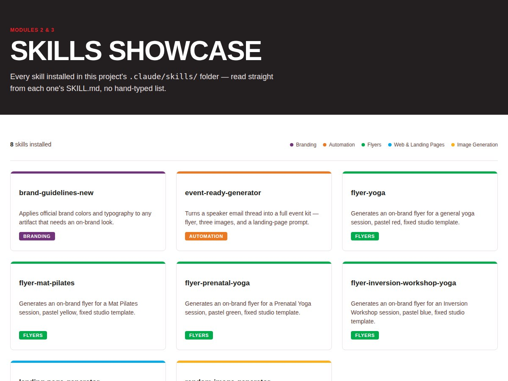

Bilingual, Venezuelan-born, and raised across three countries, I'm a software engineer,
certified yoga teacher, and builder of Honestly, a solo AI journaling app — I use
technology to help humans, not replace them.

AU Skills Showcase
A local HTML page that presents eight Claude skills I built for Atlantis University coursework — on-brand flyer generators, an event-kit automation, and a landing-page prompt builder among them. I wrote the skills myself and built the showcase page in plain HTML, CSS, and JavaScript, with the skill data kept in its own file and the design matching Atlantis University's brand system exactly. The result opens by double-clicking the file, no server or build step required, and documents all eight skills in one place.
Journal Analysis Assistant
A local AI tool that reads a psychologist's fictional client journal entries and writes clinician-facing summaries of recurring themes, citing quotes and avoiding diagnostic claims. I built the retrieval-augmented generation pipeline myself, running entirely on my own machine with a local language model, and fixed a refusal bug that was causing inconsistent runs. The result is a working notebook with real test cases and an evaluation step, written up as the capstone project for my MAI 600 course.
Honestly
A video journaling app that helps people build a consistent, low-friction reflection habit through short daily video entries instead of typed ones. I am designing the product and UI/UX myself in Figma and building the iOS app in Swift as a solo project. The result so far is a working design and an app in active development, not yet released.